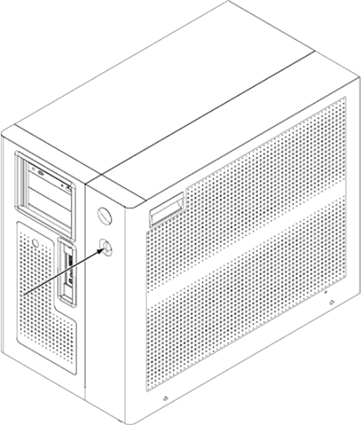
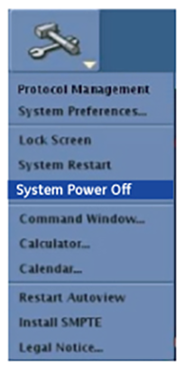

Shutting down the host computer shuts down the system safely and turns off the power to the host computer.
Topic ID: task_vc3_kj5_pfc
Shutting down the host computer or powering down the MR system
About this task
This procedure describes how to shut down the host computer or put the system into a power save mode (if applicable).
Note This procedure does not describe how to shut down the system for servicing. Please refer to the applicable LOTO procedures under Safety and General Information.
Systems that have a power save mode have a power button on the Global Operator Cabinet (GOC).Figure 1. Cabinet power button

Procedure
Click the arrow on the Tools High Level Access tab and click System Shutdown or System Power Off (as applicable).
Figure 2. System Power Off

When prompted, click on the reason for the system shutdown: Daily, Service, or Other. Or click Cancel to exit the shutdown of your system.
The application begins to shut down, which can take up to 15 minutes.
When the shut down is completed, the screen goes blank and the computer turns off.